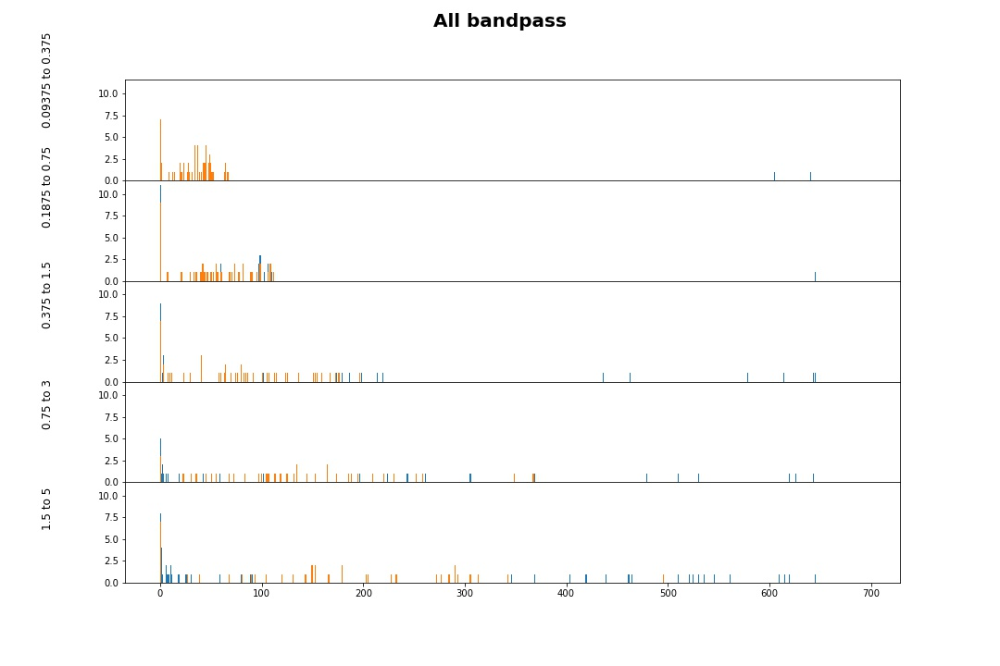
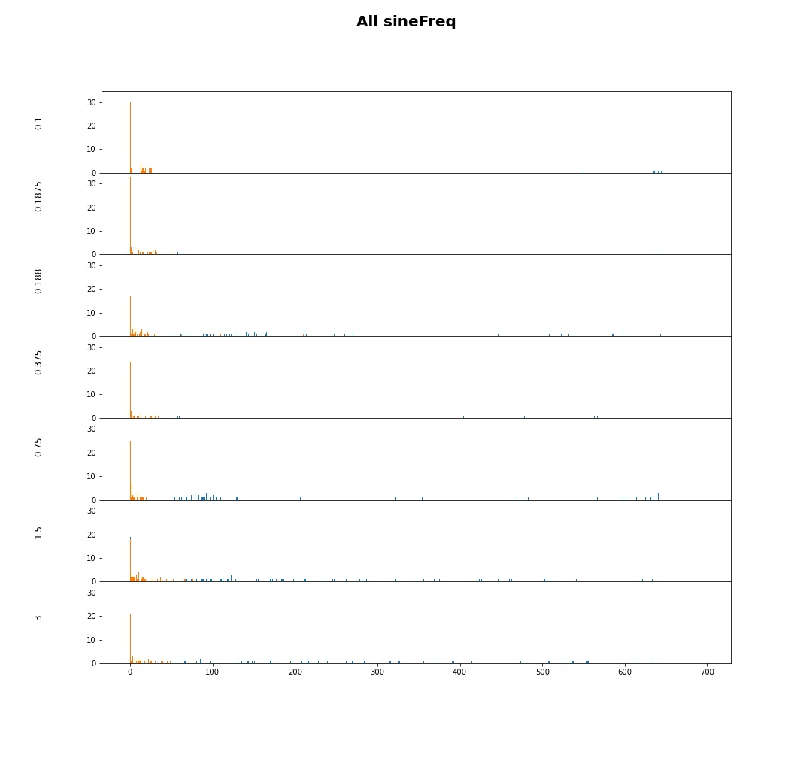
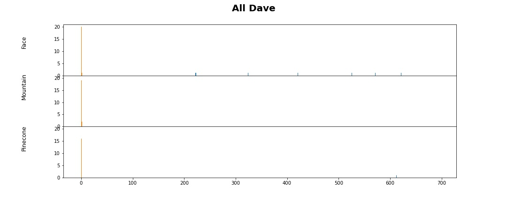
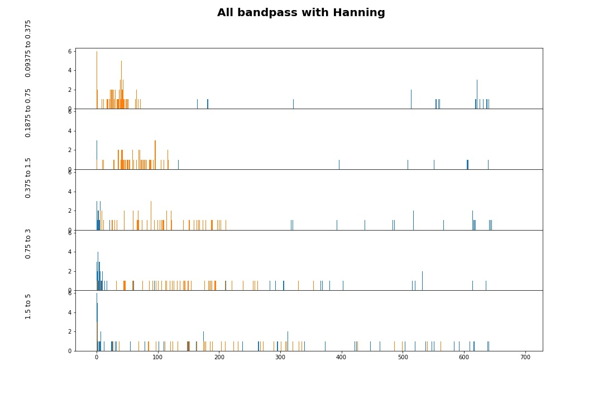
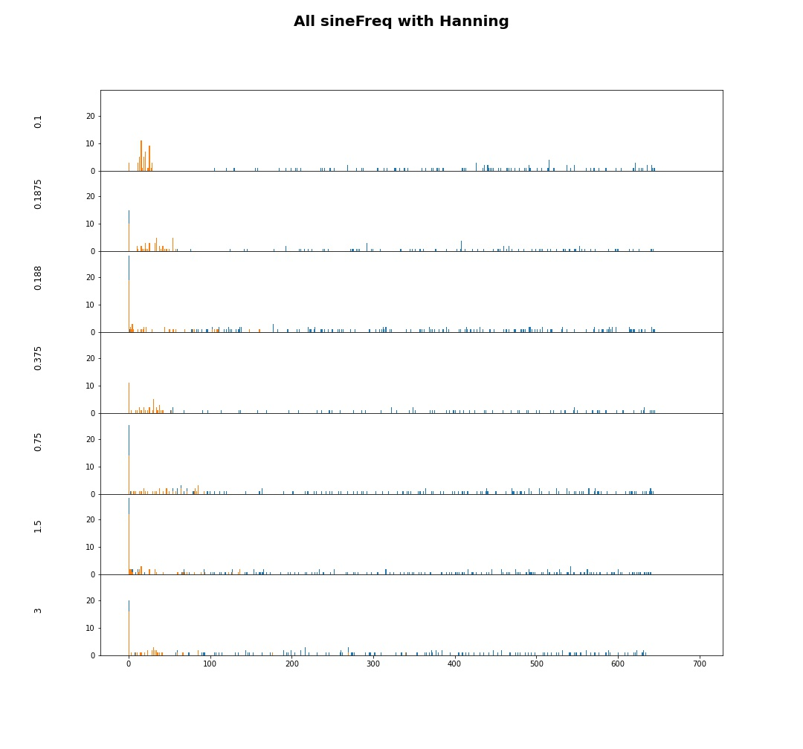
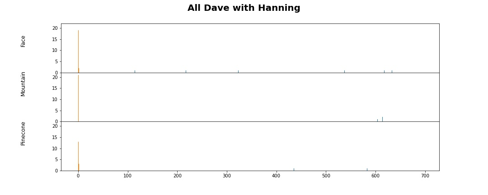
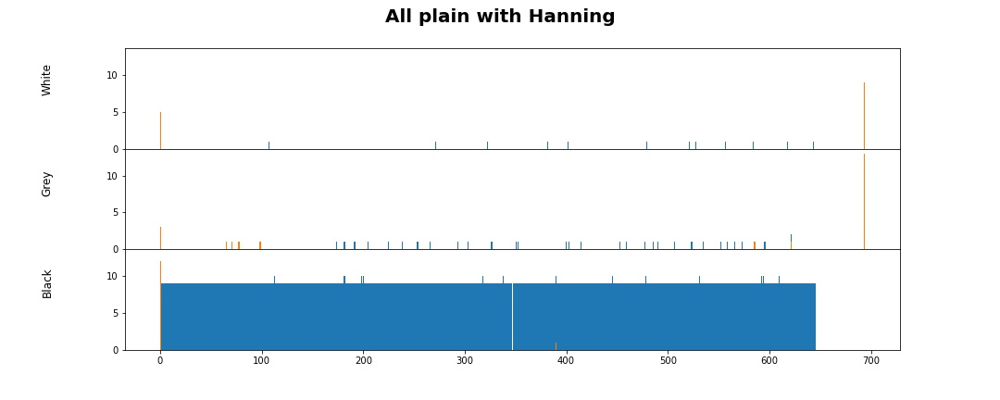

In many images, the "peak" in spatial frequency is not the highest point

All of the peaks seperated by texture, including local peaks
  
All of the peaks seperated by texture with hanning window, including local peaks
   